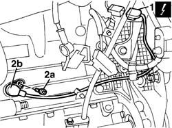

1060D26 rpm sensor - r+r
- Path
- Procedures > 10 ENGINE > 1060 DIESEL FUEL INJECTION > 1060D electronic diesel injection control > 1060D26 rpm sensor - r+r
- Kind
- repair procedure (removal / refitting; the operation number is the code)
- Applies to
- all engines; all production periods
- Interactive page
- https://sloeber94.github.io/elrnDB-fDbl/en/#/2584465
Applies to: all engines; all production periods
 Removing
Removing
 Refitting
RefittingPlace the car on a ramp.
Disconnect the battery negative terminal.
7055B54 under-engine guard - r r
1. Disconnect the electrical connection for the rpm sensor.
 | Name | Connector |
|---|---|---|
1 | RPM sensor | K46 |
2. Undo bolts (2a) and remove rpm and timing sensor (2b).

Applies to: all engines; all production periods
Refitting
RemovingFit the rpm and timing sensor and secure it using the retaining bolt.
Connect the electrical connection
| Name | Connector |
|---|---|---|
- | RPM sensor | K46 |
Connect the battery negative terminal.
7055B54 under-engine guard - r r
Remove the car from the lift.